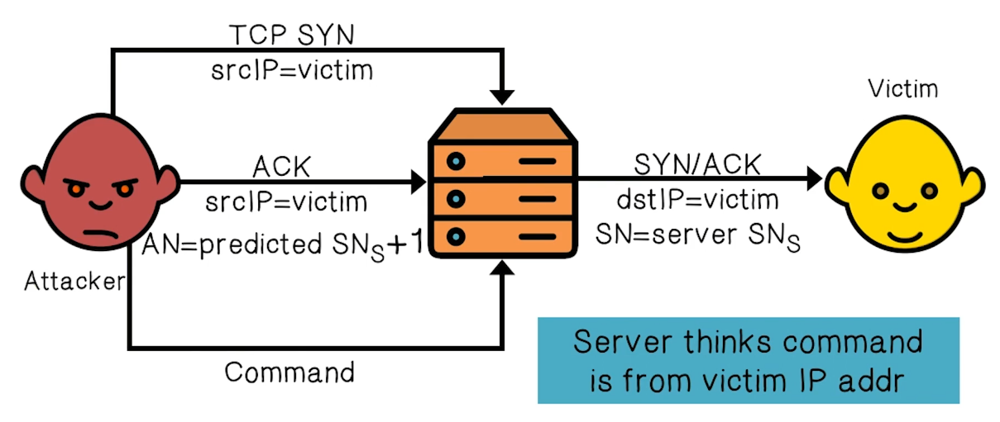

NetSec Lecture Notes - Lesson 8 - Security of Internet Protocols
Security of Internet Protocols
Internet Infrasturcture
- Easiest to think of the Internet as a collection of large networks
- Managed by Internet Service Providers (ISPs)
- Computers within one network use local and inter-domain routing
- Computers across networks use TCP/IP for routing and messaging
- BGP for routing announcements
- DNS for finding IP addresses from symbolic names
Infrastructure Quiz
- A network that purchases all transit from other networks
- A network that peers some of its network access and purchases some of it
- A network that can reach every other network through peering
Trivia
- There are only 17 Tier 1 Networks in the world at the time of recording
TCP Protocol Stack

- Link Layer is the group of protocols that only operate on the link the host is physically connected to
Internet Protocol
IP Functions
- Connectionless
- Unreliable, best effort only. No guarantee there
- Ports are not in IP header because they’re part of the transport layer
- Typical route uses several hops
- No ordering or delivery gaurantees across or between these hops
- Routing
- IP host knows location of router (gateway)
- IP gateway must know route to other networks
- Fragmentation and reassembly
- If max-packet-size less than the user-data-size
- Error reporting
- ICMP packet sent to source if packet is dropped
- TTL field: decremented after every hop
- Packet dropped if TTL = 0
- Prevents infinite loops / routing loops
IP Quiz
- IP is a connectionless and reliable protocol
- IP provides only best effort delivery. It is not guaranteed
- Due to the connectiopnless nature of IP, data corruption, packet loss, duplication, and out-of-order delivery can occur
IP Authentication
- Client is trusted to embed correct source IP
- Easy to override using raw sockets
- Libnet: a library for formatting raw packets with arbitrary IP headers
- Problem: No Source IP authentication
- Anyone who owns their machine can send packets with arbitrary source IP, and a response will be sent back to forged source IP
- Enables anonymous DoS attacks
- Enables anonymous infection/malware attacks
Transmission Control Protocol
- Connection-oriented, preserves order
- Sender breaks data into packets
- Receiver acknowledges receipt
- Lost packets are resent
- Reassemble packets in correct order
- TCP headers include port numbers
Yet another coverage of TCP handshake

- received packets with SN too far out of window are dropped
TCP Basic Security Problesm
- Network packets pass by untrusted hosts
- Eavesdropping, packet sniffing
- Especially easy when attacker controls a machine close to the victim (e.g. WiFi routers)
- TCP state easily obtained by eavesdropping
- Enables spoofing and session hijacking
- Denial of Service (DoS) vulnerabilities
TCP Security Quiz
- Application layer controls can protect application data, and IP addresses
- IP information cannot be protected by transport layer controls
- Network layer controls can protect the data within the packets as well as the IP information for each packet
- Data link controls can protect connections comrpised of multiple links
Random Initial Sequence Numbers
- In TCP handshake, the first packet from client and server have their sequence number randomly generated
- This matters because if those numbers were predictable, an attacker could create a TCP session on behalf of a forged source IP address
- Breaks IP- ased authentication (e.g. SPF,
/etc/hosts)
- Random sequence numbers do not prevent this attack, but they make it harder

Example DoS Vulnerability: Reset
- Attacker sends a Reset packet on an open socker
- If correct SNs then connection will close, denying service to the spoofed victim
- Naively, probability of success is 1/232 (32-bit seq #s), but many systems allow for a large window of acceptable sequence numbers. This gives a much higher success probability
- Attcker an just flood with RST packets until one works
Protocols Quiz
- Protocol designed to exchange routing and reachability information among autonomous systems
- Border Gateway Protocol (BGP)
- Handles routing between AS’s
- Protocol designed to map IP network addresses to the hardware addresses used by a data link protocol
- Address Resolution Protocol (ARP)
- Handles discovering IP addresses for MAC addresses, using MAC broadcast.
- Requests from gateway to LAN as MAC broadcast
- Response from hosts on LAN to gateway with their IP addresses, thus binding the IP address to their MAC address
- Protocol uses a link state routing algorithm and falls into the group of interior routing protocols
- Open Shortest Path First (OSPF)
- Handles routing within AS’s
Routing Security: Interdomain Routing
- Autonomous System: Connected group of one or more Internet Protocol preficxes under a single routing policy (aka domain)
- Within-AS routing is handled by OSPF
- Between-AS routing is handled by BGP
ARP Security
- ARP is a broadcast protocol
- Local network attacks
- Node A can confuse a gateway into sending it traffic intended for Node B just by responding with whatever IP address it wants to impersonate
- This grants Node A man in the middle status, and it can proxy traffic to Node B, reading/injecting whatever it wants
BGP Security
- Unauthenticated route updates
- Anyone can cause entire Internet to send traffic for a victim IP to attacker’s address
- Notorious example is the Pakistani attack on Youtube
- Anyone can inject advertisements for arbitrary routes
- Advertisement will propagate everywhere
- Used for DoS, spam, and eavesdropping (details in DDoS lecture L02)
BGP Attacks Quiz
- Unmasking the AS relationships by hacking the routing table
- Revelation of network topologies
- Not yet used by hackers because damage cannot be contained. It can blowback to the attacker
- Creating route instabilities
- The first step is to hijack traffic from a legitimate host
- Routing to endpoints in malicious networks
- Create a false route or kill a legitimate one
- The attacker must control a device along the victim’s communication path
BGP Security Solutions
- RPKI: AS obtains a certificate (rout origination authority – ROA) from regional authority (RIR) and attaches ROA to path advertisement
- Advertisements without a valid ROA are ignored
- Defends against a malicious AS (but not a network attacker)
- SBGP: sign every hop of a path advertisement
S-BGP Design Overview
- IPSec: secure point-to-point router communication
- Public Key Infrastructure: authorization for all S-BGP entities
- Attestations: digitally-signed authorizations
- Address: authorization to advertise specified address blocks
- Route: Validation of UPDATEs based on a new path attribute, using PKI certificates and attestations
- Repositories for distribution of certificates, CRLs, and address attestations
- Tools for ISPs to manage address attestations, process certificates and CRLs, etc.
Address Attestation
- Indicates that the final AS listed in the UPDATE is authorized by the owner of those address blocks
- Includes identification of:
- owner’s certificate
- AS to be advertising the address blocks
- address blocks
- expiration date
- Digitally signed by owner of the address blocks
- Used to protect BGP from erroneous UPDATEs
- authenticated but misbehaving or misconfigured BGP speakers
Route Attestation
- Indicates that the speaker or its AS authorizes the listener’s AS to use the route in the UPDATE
- Includes identification of:
- AS’s or BGP speaker’s certificate issued by owner of the AS
- the address blocks and the list of AS’s in the UPDATE
- the neighbor
- expiration date
- Digitally signed by owner of the AS (or BGP speaker) distributing the UPDATE, traceable to the IANA
- Used to protect BGP from erroneous UPDATEs
- authenticated but misbehaving or misconfigured BGP speakers
- To validate a route from ASn, ASn+1 needs:
- address attestation from each organization owning an address block(s) in the NLRI
- address allocation certificate from each organization owning address blocks in the NLRI
- route attestation from every AS along the path (AS1 to ASn), where the route attestation for ASk specifies the NLRI and the path up to that point (AS1 through ASk-1)
- certificates for each AS or router along path (AS1 to ASn) to check signatures on the route attestations
- all the relevant CRLs must have been checked